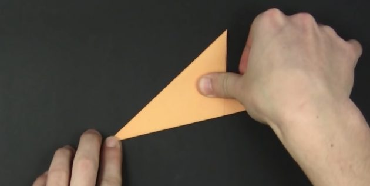
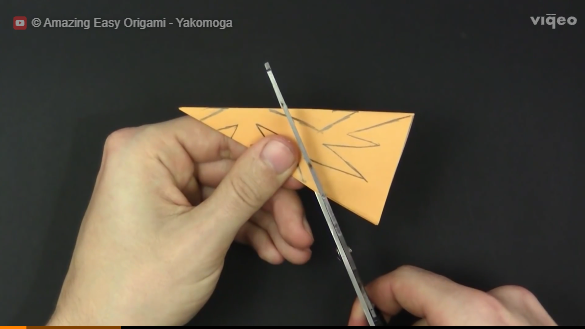

Как сделать красивые снежинки из бумаги
Как вырезать плоские снежинки из бумаги
Как сложить бумагу
Есть несколько способов это сделать. Во всех случаях у вас получится шестиугольная снежинка. Так что выбирайте тот вариант, который вам больше нравится.
Пользуетесь Viber? Читайте Лайфхакер там! Лучшие статьи о здоровье, отношениях, кино и многом другом — в нашемсообществе
Вариант 1
Вырежьте из бумаги квадрат. Чтобы сделать его из листа формата А4, загните одну короткую сторону к длинной и отрежьте получившийся сбоку прямоугольник.
как сделать снежинки из бумаги: вырежьте квадрат
Кадр: Amazing Easy Origami — Yakomoga / YouTube
Согните квадрат по диагонали. Затем сложите фигуру пополам, соединяя два противоположных острых угла. Не сгибайте бумагу полностью, а лишь наметьте место сгиба внизу.
как вырезать снежинки из бумаги: сделайте отметку
Кадр: Amazing Easy Origami — Yakomoga / YouTube
Разогните фигуру. Загните одну сторону наверх так, чтобы нижний угол получившего треугольника был на отметке.
как сделать снежинки из бумаги: загните правую часть
Кадр: Amazing Easy Origami — Yakomoga / YouTube
Другую часть загните точно так же, но на обратную сторону. Верхние боковые треугольники должны быть одинаковыми, поэтому при необходимости подровняйте фигуру.
как сделать снежинки из бумаги: загните левую часть
Кадр: Amazing Easy Origami — Yakomoga / YouTube
Если не получается сложить углы ровно, сделайте карандашную разметку, как показано здесь:
С обратной стороны наложите правую часть фигуры на левую, сложив её пополам.
как сделать снежинки из бумаги своими руками: сложите фигуру

Кадр: Amazing Easy Origami — Yakomoga / YouTube
Переверните фигуру — вы увидите ровный прямой край. Разрежьте по нему бумагу. Можно для удобства обвести этот край карандашом.
Как нарисовать узор
На получившемся треугольнике нужно нарисовать лишь половину одной вершины снежинки. Помните: середина этой вершины располагается на сгибе бумажной заготовки.
Нарисуйте узор карандашом. Не нажимайте на него слишком сильно.
Кадр: Amazing Easy Origami — Yakomoga / YouTube
Узор можно придумать самому или воспользоваться готовыми шаблонами из интернета. На самом деле узоров снежинок очень много и рисунок может быть любым, ведь всё зависит от фантазии рисующего. Так что не бойтесь её проявить.
Как вырезать снежинку
Разрежьте бумагу по нарисованным линиям. Там, где узор мелкий, удобнее воспользоваться маленькими маникюрными ножницами.

Затем аккуратно расправьте бумагу.
Если вам не нравятся сгибы на снежинке, накройте её тканью или пергаментом и прогладьте утюгом.
Готово!
Подробный гайд
Обязательно посетите вторую страницу моего сайта!